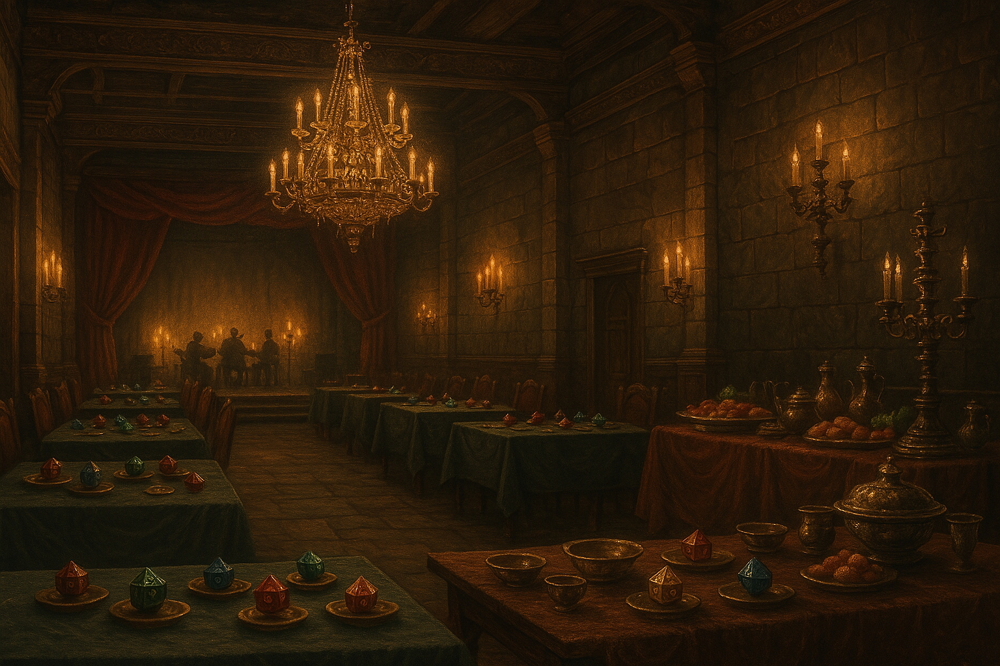

Chapter 1: A Feast of the Exquisite
Gathering of the Chosen

Gathering of the Chosen
15049.03.19
冒險者們上了馬車後，發現已經有一人在馬車上了。這名紅髮的年輕男子不多話，從袍子底下看了一眼冒險者們，便繼續沈浸在自己的世界內了。在阿龍的搭話下，才得知他名為 Cecil Heinrich，是一名貴族法師學徒。同時，阿龍也向 Cecil 介紹了同行的夥伴們。見到羅羅那標誌性的妖精耳朵，他不自覺得微微露出了輕蔑的神情。
因為已經是半夜，雷亞和羅羅上車不久後便入睡了。Cecil 從背包中拿出一張紙，開始書寫。在鑰和毛毛的好奇心下，Cecil 解釋他正在寫自己的遺書，他的背包內有不少過去寫過的版本。在 Cecil 的同意下，鑰拿走了一份作為留念，也藉機教不識字的阿龍認普通語的字（阿龍學會了爸爸、媽媽、遺產等字後，便覺得今天學夠了）。
對於這趟車程的時長，Cecil 表示他上次來的時候，睡了一覺就到了，雖然不確定這一覺到底是多長，但冒險者們還是決定先睡了再說。
幾個小時後，羅羅和毛毛兩人醒來了，拉開馬車的簾子，他們發現外面似乎是荒郊野外，顯然已經離開貝瑟頓好一段距離了。毛毛拉開前面的簾子，試圖從馬車車伕口中詢問剩餘的距離，但車伕對於還醒著很意外，表示不會太久，要他們先去睡。兩人決定保持清醒，隨時注意路邊的狀況。
同時間，對於陌生的 Cecil，毛毛也在確認 Cecil 睡死的前提下偷偷翻了他身上的東西，發現口袋內有不少厚重的金幣，但他並沒有選擇拿走，只是把玩了一番而已。
幾個小時後，天已經亮了，馬車卻沒有停下來的意思，唯二清醒的毛毛和羅羅只好繼續等待。一段時間後馬車竟然停了下來，但車門並沒有打開，而且夥伴們也都還在熟睡之中。待馬車再度啟程後，他們才知道是車伕去買了食物，他們也從車伕手中取得了排隊排到的麵包。
這趟旅程異常的漫長，晚餐時間時車伕很自動的幫兩人也買了晚餐。而熬了一整天的毛毛最終還是決定先睡一會兒，只留下羅羅自己一人清醒著。
15049.03.20
當馬車再次停下時，天已經亮了，冒險者們也一一甦醒了。車伕下了車後，把左右兩側的車門打開，便先離開了。大家紛紛下了車，看見旁邊也停了滿滿的馬車，少說有二三十輛，更外側則有花園，有不少穿著貴族裝束的人們正在逛著。而在正前方，則是一棟又大又華麗的宅邸聳立。然而尷尬的是，放眼望去，除了冒險者外，並沒有其他非人類的存在。
阿龍因為尿急，快速跑到了花園邊小解，旁邊看見的貴族們紛紛露出嫌惡的表情，與阿龍保持一段距離。
冒險者們站在馬車邊，不太確定接下來該去哪裡，甚至也不太確定自己為何會在這裡。不久後一名傭人來到冒險者面前，逐一和他們確認身份，接著便帶他們一同走入宅邸。
推開雙開的大門，冒險者們沒見過這麼大的豪宅。在傭人的說明下，他們在晚宴前可以隨處逛逛，唯一的規定是不得爬上三樓諾曼爵士的私人空間，地下一樓、一樓和二樓，甚至外面的花園、賓客大樓都可以走走。
冒險者們先走到一樓底端交誼廳旁的更衣室，選擇了自己喜歡的服裝後，便各自分開了。
換裝後，鑰和推著他的阿龍一起行動。鑰先詢問了一名看起來飽腹詩書的賓客，想詢問關於今日活動的流程。這名名為 Simon Lee 的賓客說明了今天晚上晚宴後，明天會有正式的集會，兩天一夜的活動便結束了。
接著兩人決定到外面去晃晃。走到花園，阿龍看見一名比他體格還要壯碩的女子，十分開心，便找他攀談。然而這位名為 Lady Kristen Humphries 的女子是名貴族子嗣，雖然身體壯碩，卻喜愛較為文靜的活動，其中他最喜歡的是大自然的各種生物，如花園內的花草等。阿龍聽了十分失望，便詢問是否有地方能找人比武。Lady Kristen Humphries 指著後側的花園，表示那邊有一群人聚集著正在打鬥，阿龍一聽便興奮地嚎叫並大步邁去，留下鑰和 Lady Kristen Humphries 談天。
後側的花園聚集了一群人。在阿龍暫定不久後，便有一名賭頭來詢問他是否要下注？從精壯的 Ivan Karsten 和普通身材的 Oshae Moo 兩人中，阿龍毫無遲疑地選擇了肌肉，而他的選擇也給了他值得的回報，Ivan 在一陣拼搏中贏了下來。興奮的阿龍表示他也想參加，便踏入了競技圈內。大家在阿龍喊話後感到十分興奮，場子被炒得頗熱。而一名比 Lady Kristen Humphries 又更為壯碩的男子站到了阿龍的對面，比賽即將開始。聽見場邊的鼓噪聲，還在前側花園談天的鑰在 Lady Kristen Humphries 的幫助下也來到了場邊加油，同時注意著是否有需要從中介入的時機。從場邊的喊聲聽起來，兩方的支持人數相當，但僅過了幾秒，對面的男子便被阿龍揍到倒地了。
阿龍興奮的叫著，希望有其他人上來和他比武，但場邊的人竟然紛紛散去，只剩下裁判、賭頭，以及鑰，和躺在地上的對手。從離場的人們耳語中，阿龍得知這是他的對手第一次在這裡倒下，令阿龍聽了更為興奮。不久後，對手清醒了，和阿龍寒暄了一番，表示自己名為 Bruce Tallis。鑰也幫 Bruce 做了簡單的治療，以免剛從昏迷中甦醒的他很快又倒下。三人決定先去地下室的宴會廳拿點吃的，補補體力。
毛毛換完衣服後便直攻酒吧。他點了杯啤酒，雖然酒保僅僅是拿出了一瓶罐裝的啤酒倒入杯中，但在毛毛口中，這啤酒竟然異常的好喝，讓他感到十分驚艷。
接著毛毛看見了他位子旁邊的兩人，試圖加入他們的話題。坐在他旁邊的女子名為 Juno Hopskin，而 Juno 身邊的則是 Timothee Winston。在 Juno 的說明下，Juno 和毛毛一樣都是被稱為「The Field」的最基礎階級，而 Timothee 則是高了一層的「The Gifted」，他們有較好的住宿和集會時更好的座位，除此之外，他們還有機會可以挑戰更高階級的「The Obelisk」。
在毛毛好奇求問下，他得知 T.I.D.E.S. 組織的架構大概如下：
最基礎的層級是「The Field」，是被邀請加入組織的，具體原因不清楚。
向上一級是「The Gifted」，共 10 人，在人數有漏缺時，會由高層從「The Fields」欽點加入。「The Gifted」有機會利用挑戰的機制，升級為向上一階級的「The Obelisk」。挑戰的方式為找到其中一名「The Obelisk」的專屬寶物，若挑戰成功，則會加入該階級，被挑戰的成員則會被逐出組織，他和家族成員皆永遠不得再加入；若挑戰失敗，則為挑戰者被逐出組織，他和家族成員永遠不得再加入。
「The Obelisk」共有 4 人，為世襲制或由「The Gifted」挑戰成功升上。他們與「Supreme Leader」，即 Norman 爵士，為組織的高層核心，不過他們到底有什麼權利，並不清楚。其中 Riley Richmond 便是此階層的成員之一，由 Bartosz 爵士傳位給他。
「Supreme Leader」，即 Frederick Norman 爵士。組織中最高且不會被取代的人，世襲制。
在酒吧待了一陣子後，毛毛決定到樓下宴會廳繞繞。毛毛看見熟悉的 Cecil 正在和兩名陌生人聊天，便湊了過去。這兩位自稱為 Catherine Moon 和 Tristan Perry，而從他們的口中得知，這次集會似乎會宣布「The Gifted」有人員的異動，而三人也十分興奮期待自己有沒有機會被選上加入該階層。
接著毛毛跑去找其他賓客，看見了兩名女子，便爬到他們旁邊的椅子上賣萌。名為 Phoebe van Horn 的女子穿著很明顯是貴族，但從他的口吻中，他似乎有挺嚴重的歧視觀念；Rosaline Chen 則給人一種聰明犀利的感覺。
羅羅在更衣室內並沒有換任何裝束，但雷亞現身時換了一身女僕裝。他急切地想要嘗試扮演女僕，便在和旁邊的女傭詢問後，端走對方的托盤，但他並不知道自己要將上面的餐點送到哪邊去。直到最後女傭告訴他客人就在原地後雷亞才停下腳步，客人面露不悅的取走了自己的餐點，雷亞才把托盤還給女傭。
接著羅羅和雷亞也去了酒吧。他們兩人挑了位子後，便和酒保點了個甜的。沒多久後，兩杯液態甜點便送上了桌。眼看漂亮的外型，一喝，羅羅馬上就滿意了。然而，在雷亞暫時離開時，一名男子自行坐在了雷亞原本的座位上，而且對羅羅搭訕，要請他喝一杯。在男子的堅持下，羅羅又點了一杯甜的，然而整段時間內男子竟然沒有對羅羅說任何其他的話或做任何事，只有在雷亞回來時示意他羅羅旁邊還有一個位子可以坐。離開前，男子表示自己叫 Georgio LeBlanc，若有任何需要幫忙，在這兩天內都可以找他。
離開酒吧後，兩人步出了宅邸外。雷亞難得看見了一名沒有閃躲他眼光的人，是一名看起來不到十歲的小女孩。雷亞試圖利用糖果吸引小妹妹的注意，但小妹妹僅對他微笑，並沒有接近他。最終雷亞還是和他直接對話，得知這名自述被稱為「小神童」的小女孩叫 Ingrid Bell。對於小神童這個綽號，羅羅和雷亞都感到有點起疑，但兩人還是繼續和 Ingrid 對話。不久後，小神童似乎失去了對兩人的興趣，於是就離開了，雷亞和羅羅只好默默走回宴會廳去吃點東西。
在鑰暫時離開時，阿龍和 Bruce 聊起了「當貴族是什麼感覺」的話題，因此開始玩起了「貴族遊戲」，兩人輪流扮演貴族和僕人，貴族可以無條件要求僕人做某件事，而僕人必須順從。最終 Bruce 在阿龍的要求下必須把盛的滿滿的兩盤肉全部吃完，讓他感到十分絕望。幸好鑰及時看見，阻止他們。
在這個「僕人必須無條件聽命於貴族」的貴族遊戲中，阿龍想起了以前在村中被同齡人霸凌的經過，心中為以前傻呼呼的自己感到不值得。又發現新朋友 Bruce 在貴族遊戲之後竟然有意地在躲避自己，這讓阿龍的又一次想起被排擠的難過。此刻阿龍的腦子依舊沒有多少智慧，心中卻是五味雜陳。他想著「貴族=欺負人=讓人不開心=壞蛋=需要被推翻」？
也許是思考太費力了，阿龍又餓了起來，他於是放棄思考，將注意力集中在桌上的美食。
鑰和阿龍發現同行的毛毛正在和兩名女子聊天，甚至讓女子們摸他的毛。當鑰和阿龍提及剛剛阿龍和 Bruce 在玩的「貴族遊戲」時，Phoebe 詢問了毛毛是否有興趣在集會後一起去他家，讓他做他的僕人，可以給他很多錢，還有無限多的雞腿。聽到這樣的內容，一旁的 Rosaline 尷尬地默默離開座位。Phoebe 從包包拿出一張制式但顯然有很多漏洞的合約時，毛毛心動了，鑰趕緊勸說毛毛要他仔細想想，最終 Phoebe 要毛毛在集會結束時再告訴他他的答案，然後便離開了。對話結束不久後，雷亞和羅羅也加入了其他人。
大家討論著接下來晚宴前要做什麼事情。鑰感到疲倦，想要先去客人房找個房間休息一下；雷亞邀請剛吃完盤內所有肉的阿龍來個大胃王競賽；毛毛和羅羅私下討論一起上去三樓探索，但羅羅在嘗試擲硬幣數次，都接不住硬幣的情況下（被他視為厄運），決定不去了。
鑰慢慢移動到客人房，在一樓找了間空房間。走進去後，聽見了機械化的聲音，以他的名字稱呼並歡迎他，然後自動將門關上了，令他感到十分驚奇。放完行李後，鑰來到了一樓的酒吧，看見了一名稍微年長的紳士，詢問後便與他同桌。
Theodore Eden 爵士禮貌的和鑰打招呼，並表示自己是 Obelisk 階級的，同時也說明了當時是透過「挑戰」制度才上到這個階級。鑰對於組織的運作等有些興趣，因此 Eden 爵士也對他稍作解說。
鑰在這裡慢慢休息，直到聽見晚宴的鐘響，才和 Eden 爵士一起移動到宴會廳。
在雷亞的邀約下，阿龍繼續吃東西。不久後，雷亞便投降了，阿龍的胃像是毫無限制般，直到傭人前來請他留些食物給其他客人，他才停了下來。
毛毛先爬到了二樓，看見二樓的房間門上都有印上名字。除了他知道的 Riley Richmond 女士以外，也看見了稍早在酒吧認識的 Timothee Winston 的房間，因此他敲了敲 Timothee 的房門，房門便打開了。
毛毛看見 Timothee 的房間十分寬敞，桌上放著雜亂的紙張，而且上面有不少名字。在詢問後，毛毛得知這是 Timothee 意外得到的賓客名單，他正在對一些名字做研究。不久後，毛毛便先行離開了。
毛毛小心翼翼地走上三樓，卻發現毫無阻礙。他看見左右兩側皆有很大的房間。仔細聆聽後，右側房間沒有任何聲音，左側房間則傳來一名老年男子、一名中年女子和一名中年男子的說話聲。
毛毛悄悄的走過房間，看見有一扇雙開的大門，小心翼翼地拉開，同時感覺到了一隻手壓在他的肩膀上。毛毛回頭，一名老人微笑著，自我介紹自己是 Norman 爵士。Norman 爵士向毛毛說明，這扇門是通往智慧之神 Jeorisan 的祭祠。對於毛毛可以順利走到這裡不被阻攔，Norman 爵士表示自己感到十分印象深刻，因此把門拉到全開，讓毛毛可以好好看一看裡面。
毛毛看到一大面橫幅的牆，上面有海水、浪潮、風暴的雕刻，十分精美。Norman 爵士表示這道牆後就是祭祠了，是他們和 Jeorisan 溝通的地方，因此不能讓他再往後走了。同時，Norman 爵士邀請他一起向 Jeorisan 禱告，毛毛學著爵士雙手合十，似乎從 Jeorisan 那裡聽到一點聲音，但並不清楚到底聽見了什麼。
Norman 爵士護送毛毛走下二樓，內心還對於自己剛被宅邸主人抓到而震撼不已的毛毛默默走回一樓，和前來迎接他的羅羅相會。
除了鑰之外的冒險者們回到了地下室宴會廳，看見傭人們正在移動場內的佈景，將椅子全部搬走，搬來了不少檯子，上面放了一盅一盅漂亮的骰子。正中央的空間被清的很空，自助餐區則換上了更漂亮的容器。
舞台的簾幕被拉開，樂手們隨著鐘聲響起後開始演奏。